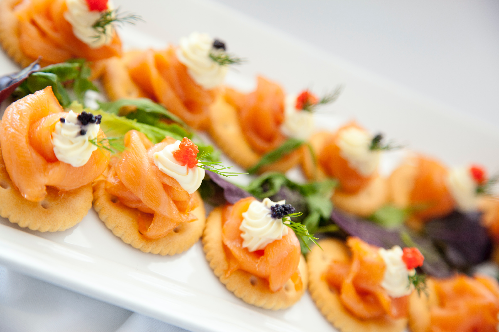
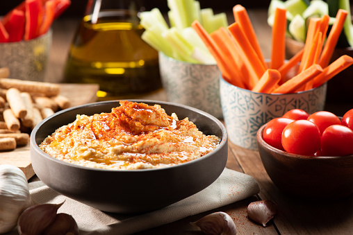
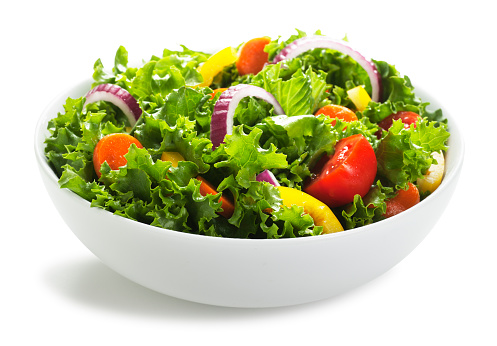
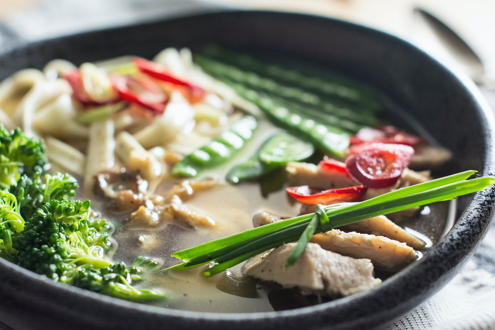

Appetizers referring to anything served before a meal, is the most common term for hors d'oeuvres. Light snacks served outside of the context of a meal are called hors d'oeuvres (with the English-language pluralization).
- Classification of Appetizers
- Cocktails.
- Hors d' oeuvres.
- Canape.
- Relishes/Crudite.
- Salads.
- Soup & Consommé
- Chips & Dips.
- COCKTAILS
A cocktail is an alcoholic mixed drink. Most commonly, cocktails are either a combination of spirits, or one or more spirits mixed with other ingredients such as fruit juice, flavored syrup, or cream. - HORS D'OEUVRES.
Small fried items such as turnovers, empanadas, samosas, and egg rolls are often served with a dipping sauce. Crudité platters (cut raw vegetables served with a dip) or even dips served with crackers or chips can be considered hors d'oeuvres as well. - CANAPE
A base of a small piece of bread, pastry or crackers. Crostini and bruschetta are classic examples of canapés. Modern canapés may use a cracker, a small pancake (called blini) or even a pastry shell as the base. A flavorful spread such as butter, flavored cream cheese or mayonnaise. - CRUDITES
Crudités are French appetizers consisting of sliced or whole raw vegetables which are typically dipped in a vinaigrette or other dipping sauce. Examples of crudités include celery sticks, carrot sticks, cucumber sticks, bell pepper strips, broccoli, cauliflower, fennel, baby corn, and asparagus spears. - SALADS
A salad is a meal made up of a variety of different foods, usually including at least one raw element. Salads for the main course—usually with a portion of high-protein items like meat, fish, eggs, lentils, or cheese. Sweet salads with fruit, gelatin, sweeteners, or whipped cream are known as dessert salads. salad, any of a number of foods that fit under one of the following categories: Salads made with greens, vegetables, pasta, legumes, or grains, mixed salads with meat, poultry, or seafood, and fruit salads. - SOUPS
Soup is a liquid dish made with a basis of meat, fish, or vegetables and typically includes solid food components. Something that has or suggests the consistency or nutritional properties of soup (such as a thick fog or nitroglycerine). - CHIPS & DIPS
chip and dip. Also, chip'n dip. A snack food or an appetizer consisting of potato chips, crackers, or raw vegetables (like carrot sticks) that are used to scoop up a dip, a savory creamy mixture.





